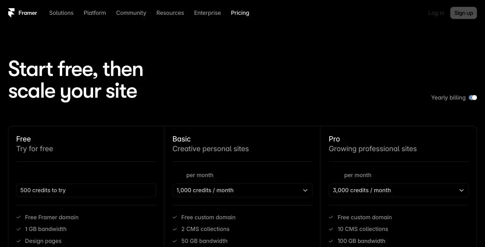
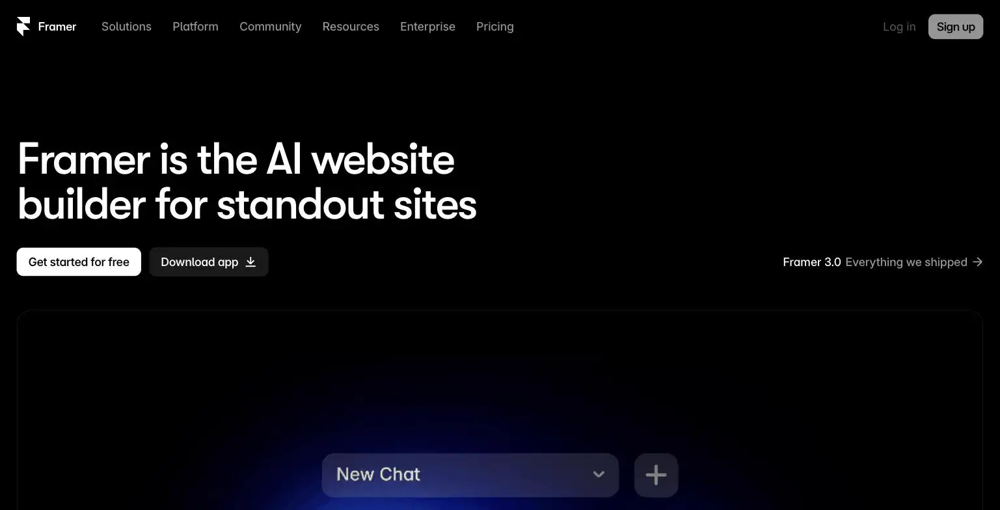

Framer
Framer is an AI-assisted website builder that generates and publishes a real site from a prompt, then lets you edit visually with real design control, not just template swapping. The free plan is genuinely usable to build and publish a full site, with Basic at $10/month and Pro at $30/month (both billed annually) adding a custom domain, CMS collections, and higher traffic limits. The site's verdict is the free plan is a legitimate way to launch a first site, upgrade to Basic once you need your own domain.
Framer will generate and publish a real site from a prompt, then let you fiddle with it visually until 3am because you just want to move this button 2 pixels to the left.
- Value for price6/10
- Capability7/10
- Ease of use6.5/10
- Trial safety6.5/10

Framer generates a real starting site from a text prompt, then hands you a visual, drag-and-drop editor with genuine design control, closer to a design tool like Figma than a rigid template builder, which is the actual differentiator versus older website builders that just swap pre-built sections.

Framer positions itself between a no-code website builder and a real design tool: the AI generates a working first draft of a site, but the editing experience underneath gives you the kind of layer-level visual control usually reserved for professional design software.
Example from framer.com. Not independently tested by Solos Gems.Pricing breakdown
- Free: Publish a live site on a framer.website subdomain, 500 credits, visible Framer badge, 1GB bandwidth
- Basic ($10/mo billed annually): Custom domain, 2 CMS collections, 1,000 CMS items, 30 pages, 50GB bandwidth, up to 10 editor seats
- Pro ($30/mo billed annually): 10 CMS collections, 2,500 CMS items, 150 pages, 100GB bandwidth, staging and branching
- Scale (from $100/mo): For ecommerce and high-traffic sites, expandable collections and bandwidth
Where the hidden costs actually are
Framer's headline pricing looks straightforward, but the real cost driver for a growing solo business is editor seats: the first seat is included, but extra full editors run $20/month each and content editors $10/month each. If you're a true solo operator who never adds a collaborator, the base Basic or Pro price is the whole story. If you plan to bring on a VA or a designer later, budget for that seat cost on top of the plan price.
Pros
- Free plan is genuinely usable to launch a real, live site, not a crippled demo
- Visual editing control is closer to a real design tool than most no-code builders
- Basic plan at $10/month covers a real solo business site with a custom domain
Cons
- Extra editor seats cost $10-20/month each on top of the base plan
- CMS item and page caps require an upgrade sooner than expected for content-heavy sites
- AI generation is a starting point, expect to do real visual editing afterward